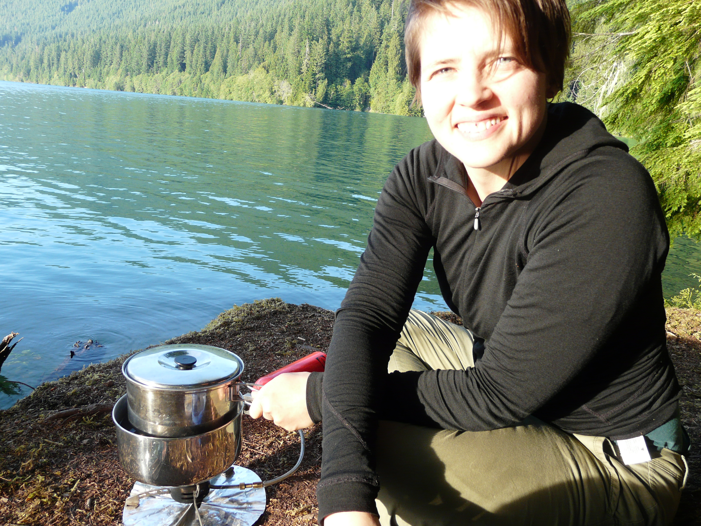

About me
Lately I've been working as a freelance academic editor. Before that, I taught literature classes at the University of Washington that ranged from the eigteenth century to the twenty-first: Laurence Sterne to Zadie Smith.
Originally from Calgary, Alberta, I've traveled all over Latin America and a few places in Europe, too. I've also lived in Vancouver, BC, which I like to visit by train, as often as I can. I love to swim, commute by bicycle, sleep in the mountains, read books in the park, and speak Spanish with anyone who's willing.
Favorite things
- Indoor trees: home is where many, many houseplants live. I give them room to express themselves.
- Books: I like textures of the everyday and evolving minds, gender-bending of all varieties, and playful narrative structures. I also like poetry that remembers what modernism was.
- Backpacking: the Rocky Mountains, Coastal Mountains, and North Cascades blow my mind, every time.
- Cooking: indoors and out! Vegetarian, with a flair for soups and salads. I haven't met a vegetable I don't like.
- Octopuses: recent fascination. In cephalopod fashion, I learn about them late at night when I can't sleep.